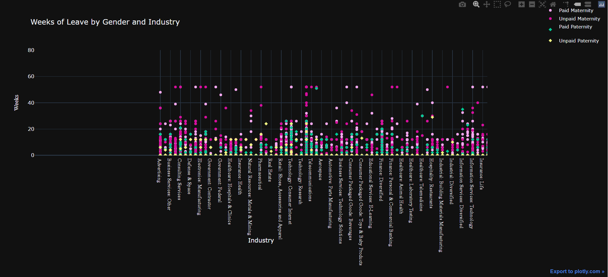

For my project, I chose a data set showing the different amounts of paid and unpaid maternity/paternity leave granted by different
companies in the United States. I chose this data set because when my youngest was born, he was in the NICU for over a month.
My husband was granted a month of paid paternity leave, while I had to work from the NICU in order to have any unpaid maternity leave left over at the end
to spend time with him. I wanted to see how many companies offered paid leave, and how much they offered. I also wanted to see if there was a difference in the amounts
granted to men versus women.
Process
One issue I ran into with my data set was that a lot of the data needed cleaning. A lot of the numbers were input as strings,
which made it difficult to parse the data correctly. For a lot of industries, "N/A" was used in place of actual data, so I replaced those data variables with "0".
I then grouped the data by industries so that when I went to make my stacked bar graph, I could easily call the data for each industry without having duplicates.
I struggled a lot with the syntax of this project. A lot of the resources I attempted to use were outdated, and I had to find new ways to do things. I also struggled with following
along with the book. In the end, I was unable to get the tooltip function to work, which was a huge disappointment. No matter what I tried, it would not access my data variables correctly.
I planned out the graph I originally wanted to design with Plotly. I was originally going for a scatterplot showing all four leave categories across the non-duplicated industries.

However, when it came time to implement my wireframe into my project, I struggled to replicate it the same way I would in Tableau, Powerbi, etc.
Across both charts, I utilized cooler colors such as magentas and purples because I believe they were calming yet distinct enough to show the data.
In the Plotly chart, I also utilized greens and yellows with different shape markers to show the difference between maternity and paternity leave.
Ideally, I would have preferred to replicate this with the D3. However, being sick and struggling with syntax errors, I just could not.
Questions
The main question I posed for this data set was which industries tended to offer the most paid leave (maternity or paternity), and which offered the least.
It was saddening to see that so many industries still offered zero paid leave for either parent. Technology, Telecommunications and Government funded jobs tended to lend more time to both parents.
I was also curious as to whether or not men got more paid paternity leave, but they usually received less leave of any kind across the board.